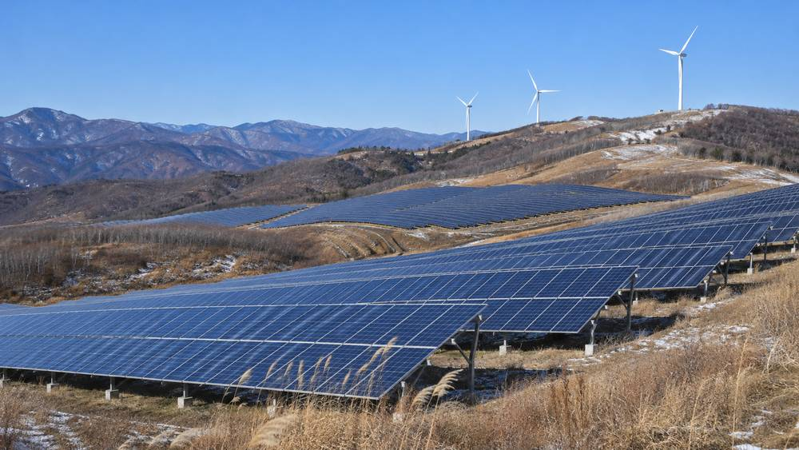

평창 유포리 태양광 150㎿, 군민 소득사업 세 번째 협약

평창군이 11월 26일 정상그룹과 봉평면 유포리 태양광단지 협약을 맺는다. 운두령풍력과 함께 2029년 상업운전이 목표다.
강원 평창군과 정상그룹이 11월 26일 봉평면 유포리 일대에 150㎿ 태양광 발전단지를 세우는 업무협약(MOU)을 맺는다. 군은 25일 보도자료에서 이 협약이 발전 수익을 군민에게 돌려주는 '재생에너지 소득사업'의 세 번째 협약이라고 밝혔다. 군은 발전사업 지분 참여로 얻은 수익금을 군민 기본소득과 복지 재원으로 쓸 방침이다.
이 협약은 처음에 11월 5일 맺을 예정이었으나 참여 기관의 내부 사정으로 날짜가 미뤄졌다. 그 사이 군은 10월 28일 운두령풍력, 11월 18일 공공주도형 육상풍력 발전사업 협약을 먼저 맺었다. 운두령풍력은 21㎿ 규모로 평창군과 운두령풍력, 하누리파워, 한국남동발전, 주민대표가 함께 협약했다. 군은 이 사업에 주민참여형 모델로 든 태백 가덕산 풍력발전단지의 개발 방식을 적용한다고 밝혔다. 주민대표가 처음부터 협의에 들어가 사업 투명성을 높이고, 발전 수익을 지역과 나누는 방식이다.
유포리 태양광과 운두령풍력 두 발전소의 상업운전 시작 목표 시점은 모두 2029년이다. 군은 쓰지 않는 군유지를 찾아 태양광발전소를 더 확보하고, 허가를 받았다가 취소된 풍력발전단지의 재개발 타당성도 조사한다. 군은 이런 방식으로 2035년까지 군민에게 소득을 나눌 발전소 지분을 계속 늘려 갈 계획이다. 다만 보도자료에는 유포리 사업의 총사업비와 군 지분율, 군민 한 사람에게 돌아갈 금액이 나오지 않았다.
심재국 평창군수는 "재생에너지 개발 이익을 특정 기업이 독식하는 것이 아니라 군민 모두에게 혜택으로 돌아갈 수 있도록" 하겠다고 말했다. 협약식은 11월 26일 오후 4시 평창군수 집무실에서 열린다.
시민에너지 관점
평창군이 이번 가을 맺는 세 협약을 더하면 육상풍력 200㎿와 운두령풍력 21㎿, 유포리 태양광 150㎿로 371㎿다. 본지가 11월 16일 보도한 평창 풍력 200MW 공공주도 협약에 이어 태양광까지 군이 지분을 갖겠다는 것은, 개발 이익이 외지 기업으로만 빠져나간다는 걱정에 대한 답이 될 수 있다. 다만 군 지분율과 군민 배분 기준이 정해지지 않으면 소득사업은 이름에 그친다. 군은 2029년 상업운전 전에 지분율과 배분 기준을 조례로 정하고, 군민이 직접 출자할 길도 함께 열어야 한다.
출처: 평창군 2026-11-25 「11월 25일 보도자료」 중 「평창군, 정상그룹과 150㎿급 태양광 업무협약 체결… ‘재생에너지 소득사업’ 세 번째 결실」(경제과 에너지전략TF, 붙임 hwpx) 원문 보기
출처: 평창군 2026-11-04 「11월 4일 보도자료」 중 「평창군, 재생에너지 소득사업 본격화… ‘군민 기본소득’ 재원 마련 박차」 원문 보기
출처: 평창군 2026-10-27 「10월 27일 보도자료」 중 「평창군, '운두령풍력' 업무협약 체결.. 공공주도형 재생에너지 첫걸음」 원문 보기